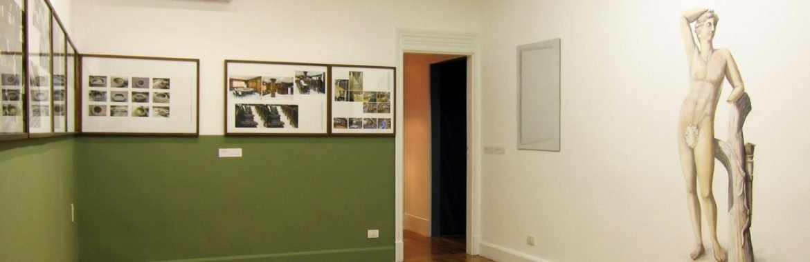
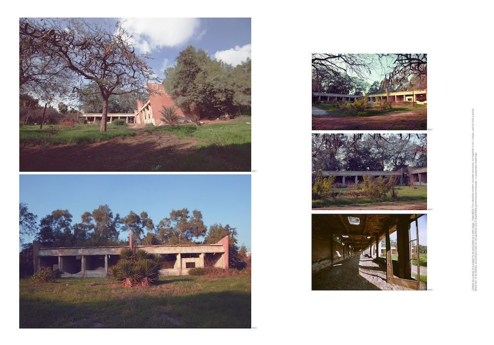
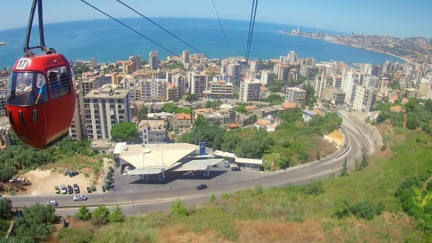

By Ismail Fayed

Courtesy: Mahmoud Khaled / Gypsum Gallery
Painter on a Study Trip, an exhibition by Mahmoud Khaled at Gypsum Gallery, is like a multilayered, conceptual hall of mirrors. It reflects and reflects back, problematizing almost endlessly how we understand and situate contemporary works of art.
Although the exhibition stems from a particular context, studying fine arts in Egypt post-1952, it also centers around a contemporary preoccupation with which criteria for analyzing and judging artworks are valid, and how we can understand artistic process and its very specific relationship to its context through these criteria.
The artist preserves the multifaceted historical, cultural and political reality of how and why visual arts are what they are in Egypt right now by creating a parallel multiplicity in his artistic process. Alongside this, he presents a critical inquiry into those criteria that define the possibilities of understanding a work of art in general and, more specifically, judge it as "good," "bad," "beautiful," and so on.
The tension between those two processes, and the ways in which they overlap (as the artist himself is an Egyptian, fine arts-trained practitioner) and where they don't (for are fine arts as they stand, with their institutions, traditions, artefacts and audiences, critical enough for contemporary art?) are mediated through several strategies and mediums. His strategies range from fiction to autobiography to humor, and the forms through which those strategies are materialized include sculptural installation, wall painting, photographic series and video.
The various works presented at Gypsum Gallery stand on an elaborate conceptualization. A student in a state fine arts faculty (in Alexandria) is inspired by a 19th-century oil painting in the faculty's collection and goes on a study trip to the Antoniades Gardens (designed by Sir John Antoniades in 1860 and modeled after the Versailles Gardens, in turn designed in the 1660s). The exhibition at Gypsum shows his process and the resulting product. This is not a simple conceit: The student is a figment of the artist's imagination but the lines are blurred. The artist was a student at that same faculty and most probably went on a similar study trip himself.
The student's work is then presented to us, with notes, descriptions and titles, organized around six categories that the artist – arbitrarily, it seems – identifies as the recurring benchmarks for understanding works of art. The categories, outlined in the exhibition notes and in labels next to some of the works, are "Detail," "Source," "Composition," "Exercise," "Process" and "Material." While these might sound technical and neutral, Khaled counters the idea of the clinical nature of analytical criteria by adding the heavy, composite content of his own experience to the artworks, thus infusing the categories with his own subjectivity.
Through this he confronts the limits of such categories to withstand heterogeneous and sometimes deeply inconsistent information. For example, the category of "Source" is composed of a series of wooden frames containing neatly arranged photos of interiors of what appears to be a bureaucratic institution. The photos capture halls, corridors and a reception, with intermittent arrays of chairs and office equipment. There is even the dishevelled mess of a storage room. They reveal an institutional setup that might belong to the fine arts faculty or the administrative body that oversees the management and maintenance of the Antoniades Gardens. The photos also suggest that these two institutions are profoundly conflicted about their own mission statements. The gardens seem to have fallen into ruin and disuse, making the very idea of allocating space in the city for a public park or garden problematic, as well as the idea of constructing it following a certain style or aesthetic (in this case the Versailles Gardens or colonial Belle Époque).

Mahmoud Khaled, Details, C-print plate, 100 x 70 cm, 2014. All images courtesy Mahmoud Khaled/Gypsum Gallery.
The continued presence of these institutions becomes a historical accident that has turned into a present anomaly. One wonders if the audience's relationship to fine arts is the same as their relationship to colonial cosmopolitanism? And how do the state and its institutions position themselves in relation to these legacies (be it fine arts or colonial gardens)?
For me, the artist's critical reflections stir up a lot of ambivalent and conflicted feelings about Egypt's modern history in the arts and its relationship to colonialism.
In "Process" we see a framed photograph of the artist's hand holding a mobile phone showing a photograph of the framed 19th-century painting that inspired him (and/or the student). This triple-framed image is almost a literal rendition of the multiple framing we have to do to be able to see the image. In other words, the physical frame on the wall frames the photograph of the hand holding the phone, and the phone in turn frames the photograph of the painting, which includes that painting's frame, all of which reminds us of the incredible distance between us and the "original" image, and of the extreme condensation that contemporary technology creates when it collapses those frames almost completely. This complexity can perhaps only be represented by a strategy akin to comedy, which Khaled uses to exceptional effect.
The endless framing is a subtle example of his use of humor, but it is also evident in his creation of a fictitious trophies for the worst work of art. Placed at the very end of the gallery, with its own spotlight, it congratulates an artist for his apparent failure to understand his medium or use it in inspiring and new ways. Perhaps a tongue-in-cheek gesture, it also serves as critique of award-giving artistic competitions that set artificial standards for evaluating art that exclude alternative or radical possibilities.
The trophy is accompanied by a video of footage, filmed from above, of a cable car crossing mountain peaks in Lebanon and Brazil. There is a voiceover, an edited audio track of Italian thinker Franco 'Bifo' Berardi meditating on the role of art and the artist during a studio visit he paid to Khaled in 2012. The unwavering filming angle, the deliberate slow pace of the cable car, and the subject being filmed (nature) all coincide with the same preoccupations the artist has about what the "proper" subject matter for contemporary visual art is. How can artists communicate through their work their interests and inspirations? The voiceover reminds us of a deep-rooted expectation of a certain role artists and art should play, or toward which they have to assume a particular position.

Video still from Mahmoud Khaled, A Memorial To Failure, 2013. Engraved crystal plaque and HD video; 19.55 min.
In the "Exercise" category, a mural painting of a Greco-Roman statue is painted directly on the wall of the gallery. The statue forms the basis of a staple exercise for fine arts students in Egypt. Khaled actually commissioned a commercial artist to execute the painting. Both the form and subject bring to mind the dominance of classical standards of Western beauty in fine arts training and how such standards are infinitely replicated in the likes of such "exercises," putting into doubt the relevance of subject matter for a classical education in the arts, and the apparent neutrality of a choice laden with historical and political undertones.
Right next to this is a computer-generated image of a blank canvas, printed on photographic paper and hung on the wall, under the category "Material." The work furthers the confusion, for artist and audience, of what constitutes appropriate subject matter for a contemporary canvas and how we can relate to it. Although the virtual image can serve as a play on illusion and digital manipulation, in this context it reinforces the question of what the artist, at this time and place, can choose as form and subject matter, and how we, as audience, are able – or not – to receive and understand them.
Perhaps the most visible and tangible strategy is the physical reconfiguration of one of the gallery's rooms as a quasi-fountain. The installation, under the category "Composition," takes over the entire room: swimming pool tiles have been installed on the floor and almost half way up the walls. A thick red velvet curtain covers the only window in the room and the audience can access the "fountain" by mounting a two-step alleviation. The installation can be regarded as an allusion to the fountains and pools of the Atoniades Gardens, but the effect it creates is remarkable. On the one hand the transformation makes one reflect on accessibility and space. On the other it creates the possibility of interacting with the gallery in an unusual way, transforming it into a site of leisure and social performance. This is not normally within the purview of visual arts, as its largely austere, minimal spaces afford little more than a limited, pre-set social choreography rather than improvisation, especially in Egypt's rather stiff, elitist galleries. This work again problematizes the set criteria we have for analyzing and appreciating a visual artwork.
Khaled's observations and methods combine to create one of the most exciting artistic processes I have seen lately. Not only does he engage with his immediate context in a meaningful way, he brings it under a rigorous framework, creating that rare balance of a relevant, informed work that is also critical and conceptually intricate.
Mahmoud Khaled's exhibition ran at Gypsum Gallery from 11 April - 6 May 2014